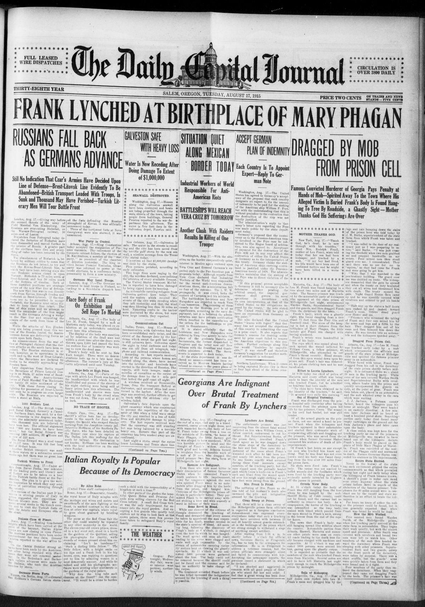
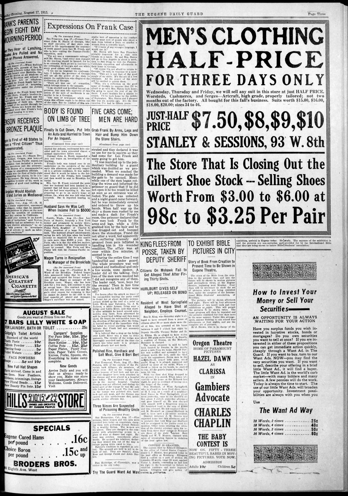
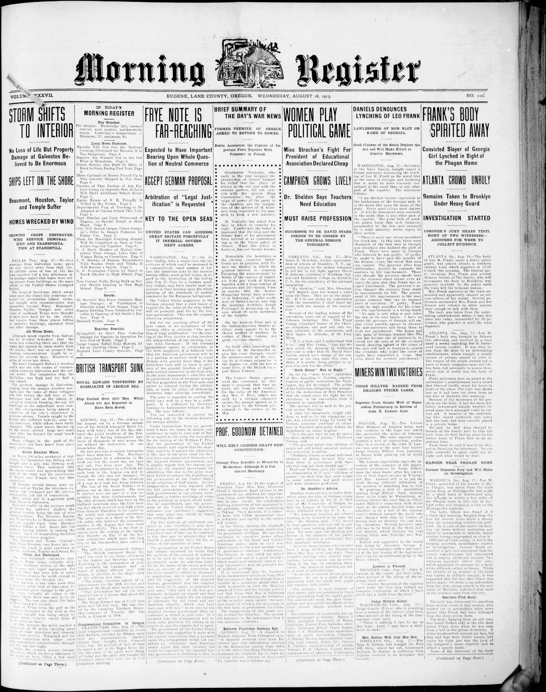

HN HN-398 · August 17, 1915 · Civil Rights & Social Change > Racial, Ethnic & Religious Justice > Lynching and racial violence
Source: Evening Republican, p. 2 — original page; New Georgia Encyclopedia case history.
Report: The paper stated that Leo Frank, convicted of murdering Mary Phagan, had been seized from the state prison at Milledgeville and found hanged near Marietta, Georgia. It relayed rumors about exactly how he was killed and speculated about what the kidnappers meant to do with his body.
Assessment: The abduction and lynching are established; none of the mob's members acquired judicial authority to execute him. Georgia's 1986 posthumous pardon expressly addressed the state's failures to protect Frank and bring his killers to justice without deciding his guilt or innocence. The original report's sensational and anti-Semitic context demands care.
Authentic scans retrieved from Historic Oregon Newspapers (University of Oregon). Article crops are located using the archive's own ALTO OCR word coordinates and rendered at native crop resolution; page scans are 1,200-pixel-wide renditions. No images were generated, mocked, or retouched.



Not yet acquired. Queued for provider-specific acquisition testing (see source-acquisition manifest).
URL (preserved verbatim): https://newspapers.library.in.gov/?a=d&d=EVRP19150817.2.10
Saved research report: Historical_Newspaper_Event_Research_378-402_2026-10-23.md
Evidence note: A newspaper report means a historical publication made a claim; it does not establish that claim as fact. Contemporary reporting is separated from later scholarly context and our own assessment.